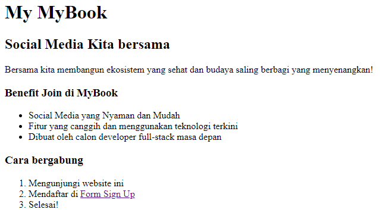
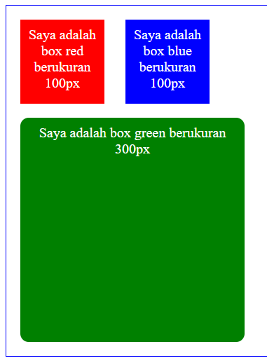
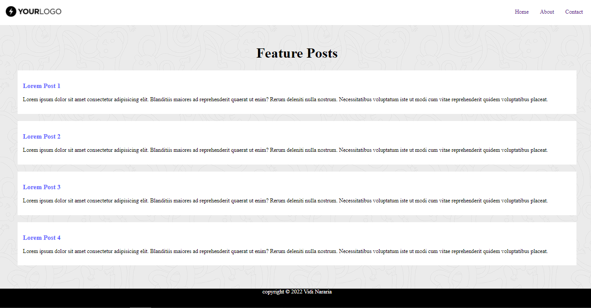
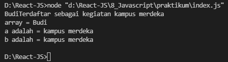
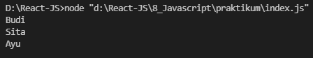
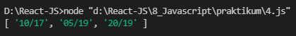
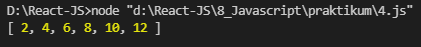
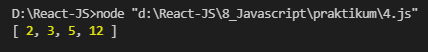

Git
Pada task ini telah terbuat sebuah repositori git dengan didalam reponya ada 4 branch yaitu ada branch master, develop, featureA, dan featureB. Hasilnya dapat dilihat pada gambar dibawah ini.
/screenshot/3.PNG)
Introduction UI UX
Pada task ini telah terlaksana untuk mengidentifikasi suatu website dari fiturnya dan tata letaknya
Figma
Pada task ini telah terbuat sebuah prototype ui ux yang merupakan dari pembelajaran materi Figma. Prototypenya dapat dilihat pada gambar dibawah ini.
HTML
Pada task ini telah terbuat sebuah 3 file html untuk membuat form sign up, dapat dilihat pada gambar dibawah ini.
CSS
Pada task ini disuruh untuk mengubah tampilan dari file html yang telah diberikan. task pertama ini saya memakai CSS Internal dikarenakan tidak banyak tampilan yang perlu saya gunakan.
 Bootstrap
pada bagian awal ini disuruh untuk membuat navbar dengan bootstrap. Berikut merupakan file dan hasilnya.
Javascript
pada task ini terdapat 6 soal pada soal no 1 disuruh untuk memperbaiki code javascript yang diberikan dan soal no 2 disuruh untuk menjelaskan kenapa code pada no 1 tidak bisa running. Dan soal no 3 sampai 6 kita disuruh untuk membuat code yang outputnya sudah ditentukan pada soal.




Cleancode
pada task ini disuruh untuk menganalisis kode yang telah diberikan berikut merupakan hasil analisis kodenya.